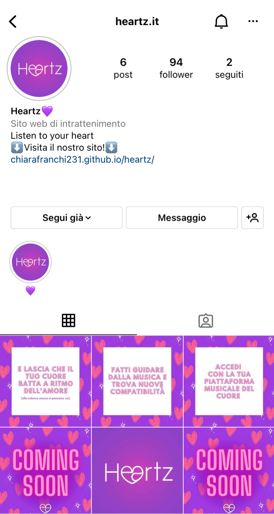

Abstract
Heartz nasce dall’idea che la musica dica molto sulla persona che la ascolta.
Per questo motivo abbiamo ideato una piattaforma che si pone l’obiettivo di connettere persone affini attraverso la compatibilità dei gusti musicali.
Collegando la propria piattaforma musicale sarà possibile condividere brani e artisti preferiti, mettersi in contatto con chi condivide le stesse passioni e stringere nuovi legami.
Questo progetto è indirizzato a un pubblico maggiorenne, con particolare attenzione ai giovani; è inoltre predisposto per un pubblico italiano e non solo internazionale.
Il sito prevede, ipoteticamente, una rispettiva applicazione gratuita.
Project Management Plan
- Benchmarking
- Struttura e Layout
- Linguaggi e Strumenti
- Background
- Obiettivi comunicativi
- Un numero di visualizzazioni del sito pari a 100
- Un numero di utenti sul sito pari a 100
- Un numero di follower su Instagram pari a 100
- Target audience
- Messaggio
- Promozione
- Valutazione dei risultati
Obiettivi
Heartz è una piattaforma che ha lo scopo di connettere gli utenti tra loro, usando come parametro la compatibilità delle preferenze musicali di ogni iscritto. Questo processo avviene tramite il confronto delle playlist che gli stessi utenti condividono collegandosi, attraverso il sito, alla piattaforma di streaming musicale che preferiscono. L'idea è quella di realizzare il sito di presentazione di un'ipotetica app, con lo scopo di informare i futuri utenti sul funzionamento dell'applicazione e attirare possibili iscritti.
Target Utente
Il sito è indirizzato a un pubblico maggiorenne, con particolare attenzione ai giovani compresi tra i 20 e i 30 anni. È inoltre predisposto per un pubblico italiano e non solo internazionale.
Competitor
Una volta individuato il nostro mercato di riferimento, abbiamo cercato chi già fornisse il nostro stesso tipo di servizio. Tra i maggiori competitor diretti abbiamo trovato le applicazioni, con i rispettivi siti, di Tastebuds, Turn Up e Pom. Dopo aver confrontato le varie app e individuatone le criticità, abbiamo fatto affidamento alle recensioni degli utenti per capire cosa non andasse e cosa ricercassero gli utenti stessi, così da poterci distinguere. Abbiamo voluto prendere in considerazione anche la piattaforma di Tinder, la quale rientra tra i nostri competitor indiretti. L'analisi ha riguardato sia il servizio in sè, sia la struttura del sito e abbiamo deciso di valutare la combinazione dando un giudizio da 1 a 5 (1=per nulla soddisfacente, 5=molto soddisfacente).
Dal punto di vista del servizio offerto, Tastebuds segue il meccanismo della compatibilità attraverso i gusti musicali. Tuttavia i profili utente contengono poche informazioni, l’applicazione prevede funzionalità a pagamento per cui non sono effettuati rimborsi ed è possibile scaricarla solo se dotati di un sistema iOs. Non si tratta di una piattaforma multilingue, infatti il servizio è offerto esclusivamente in lingua inglese poiché la maggior parte degli utenti è situata in Stati Uniti e Regno Unito.
Anche il sito dell'app presenta numerose criticità. Sebbene permetta di fare il login e di scaricare l'app, vengono fornite poche informazioni sul servizio in sè. A livello grafico risulta essere abbastanza caotico, infatti lo sfondo è composto da un collage di immagini che compromettono la leggibilità dei testi; inoltre, aprendosi con il layout di login, è come se imponesse la registrazione. Infine, il logo e il nome dell'app vengono relegati in alto a sinistra per poi scomparire dopo aver scrollato la pagina senza essere ripetuto, il che tende a non fidelizzare l'utente.
Valutazione: 1/5
Anche in questo caso lo scopo della piattaforma consiste nel collegare gli utenti attraverso compatibilità musicale. A livello di servizio però è limitato, infatti è possibile solo il collegamento a Spotify e non ad altre piattaforme di streaming musicale. Non si tratta di una piattaforma multilingue e gli utenti lamentano la scarsità di persone da conoscere sull’applicazione.
Il sito contiene il minimo indispensabile e lo scopo dell'app viene descritto in poche righe. Permette esclusivamente il download dell'app senza prevedere la possibilità di registrarsi dal sito.
Valutazione: 2/5
Come le precedenti anche Pom è un'app di incontri basata sulla compatibilità delle playlist. Le recensioni a riguardo sono prevalentemente positive, se non fosse che non è più possibile scaricarla nè tantomeno registrarsi in quanto è stata raggiunta la soglia massima di 25mila iscritti.
A differenza degli altri il sito è accattivante e fornisce informazioni esaustive sul suo funzionamento. Permette di scaricare l'app sia su iOs sia su Android e presenta collegamenti ad altri social. Tuttavia è esclusivamente in lingua inglese e non consente di registrarsi dal sito.
Valutazione: 3/5
Tinder è l'app di dating online per eccellenza e anche il sito presenta tutti gli elementi indispensabili. Tuttavia è incentrata su compatibilità anagrafiche e fisiche. C'è la possibilità di condividere una o più canzoni preferite, ma la componente musicale passa in secondo piano.
Valutazione: 4/5
Architettura del sito
Fig.1 Architettura sito
Wireframe


Fig.2 Wireframe Home
Fig.3 Wireframe homepage del profilo
Fig.4 Wireframe pagina Your Vibez
Fig.5 Wireframe pagina Your Chordz

Fig.6 Wireframe pagina Your Tastez

Fig.7 Wireframe pagina notifiche
Look and Feel
L'intero sito è stato progettato affinchè risultasse semplice, accattivante e intuitivo. Per questo motivo abbiamo optato per una grafica minimale, basato su una ripetizione di forme e colori che riprendono il logo. Anche quest'ultimo viene ripreso in più punti con lo scopo di fidelizzare l'utente e far sì che il sito venga ricordato.
Tutto il sito si basa sull'unione dei concetti di musica e di amore. Il nome stesso "Heartz" nasce dalla fusione della parola "Hertz", unità di misura delle frequenze in musica, e della parola "Heart" ("cuore" in lingua inglese).
Le stesse scelte grafiche ruotano su questa ambivalenza. Per quanto riguarda le scelte cromatiche, infatti, volevamo un colore vivace e allegro, che potesse rimandare ai concetti di musica, passione e amore. Abbiamo quindi scelto una tonalità di viola (#8C42D7) perchè risultato dall’unione di blu e rosso i quali, convenzionalmente, rappresentano rispettivamente la musica e l'amore.
Con l’aiuto di AdobeColor abbiamo poi individuato le tonalità che meglio si abbinano al colore principale del sito: un bianco tendente al lilla per lo sfondo (#f3ecfg) e un fucsia (#D43BB4) come colore di accompagnamento. Questa triade cromatica è stata mantenuta in ogni pagina del sito per rendere il tutto omogeneo.
La prevalenza di forme arrotondate sta ad indicare un ambiente amichevole e riprende il logo che unisce le due vocali in un cuore.
Dal punto di vista tipografico abbiamo optato per un carattere bastone, minimalista e chiaramente leggibile: Gravity Ultralight. Tale font è stata adoperata sia per le scritte all’interno del sito che per il logo da noi progettato.
Linguaggi HTML e CSS;
Sublimetext 2 per la scrittura del codice HTML e CSS;
Bootstrap per il layout della pagina di accesso, il navbar, il footer e altri elementi grafici;
Flaticon per le icone;
Ilustrator per la creazione del logo e degli sfondi;
Photoshop per la modifica di icone, immagini ed elementi visivi;
Canva per la creazione di post destinati alla pubblicazione su diversi social network;
Justinmind per la creazione del wireframe;
Goodnotes per la realizzazione dell'architettura del sito;
Github per la pubblicazione del sito;
DaFont per la ricerca della font;
Google chrome per la visualizzazione del sito e l’ispezione dei contenuti;
Favicon.ico per la realizzazione del favicon;
AdobeColor per la scelta cromatica;
SocialNetwork quali Facebook, Instagram, Twitter e Whatsapp per la promozione del sito;
Google Analytics per il monitoraggio delle visite al sito.
Communication Strategy
Sulla base del benchmarking precedentemente descritto, abbiamo deciso di adottare alcune strategie per distinguerci dai nostri competitors.
In primo luogo, a differenza dei siti di incontri tradizionali, Heartz pone al centro i gusti musicali degli utenti utilizzandolo come parametro per individuarne le compatibilità.
Per rispondere alle lamentele degli utenti relative alle applicazioni di cui sopra, offriamo la possibilità di collegamento a tutti i maggiori servizi di streaming musicale (Spotify, AppleMusic, AmazonMusic).
A livello grafico Heartz propone un’alternativa chiara e intuitiva, fornendo informazioni brevi ed esaustive sul servizio offerto. Inoltre, a differenza degli altri siti, Heartz permette di accedere e registrarsi direttamente dal sito, proponendosi come la versione web dell'app stessa. Inoltre è prevista la possibilità di scaricare l'app sia su iOs sia su Android.
L’obiettivo del nostro progetto è quello di riuscire a raggiungere il maggior numero di utenti, in particolare la fascia dai 20 ai 30 anni (vedi sotto). Per quantificare questi obiettivi ci siamo imposte di raggiungere:
Per scoprire cosa ci ha spinto a scegliere queste piattaforme vedi la sezione promozione.
Il nostro sito è indirizzato ad appassionati di musica senza limite di età. Trattandosi di un sito di incontri occorre essere maggiorenni per iscriversi, ma per il resto l'accesso è libero. Le nostre strategie di comunicazione sono perlopiù incentrate a far sui giovani compresi tra i 20-25 e i 30-35 anni, essendo la fascia di età che maggiormente usufruisce di siti di incontri.
Per la prima volta abbiamo deciso di fare riferimento a un pubblico italiano e non più solo internazionale, come invece era previsto dai nostri competitors. Tuttavia non ne abbiamo escluso l'accesso, prevedendo una versione in lingua inglese.
Il messaggio che vogliamo lanciare con questo sito è quello di lasciare da parte l'aspetto esteriore e puntare su quello interiore. Porre l'attenzione sulle proprie passioni e trovare qualcuno con cui condividerle è la chiave per costruire legami solidi e duraturi. Ed è proprio questo lo scopo di Heartz: mettere in contatto le persone attraverso la musica.
Abbiamo deciso di promuovere il nostro sito sui principali Social Network del momento, creando appositamente omonime pagine social. Ci siamo avvalse di Instagram, Facebook, Twitter e Whatsapp. Questa scelta è stata dettata dalla necessità di voler raggiungere il nostro target audience, il quale risulta particolarmente attivo su queste piattaforme.
Fig.8 Homepage Instagram
Fig.9 Homepage Facebook
Fig.10 Homepage Twitter
Possiamo ritenerci soddisfatte dei risultati raggiunti. Infatti, dopo soli tre giorni dalla pubblicazione del sito, siamo riuscite a raggiungere (e in alcuni casi a superare) gli obiettivi che ci eravamo prefissate. Grazie a Google Analytichs abbiamo potuto monitorare visualizzazioni e utenti sul sito, fino ad arrivare a un totale di 294 visualizzazioni e 123 utenti. Oltretutto con nostra grande sorpresa, siamo riuscite ad ottenere visualizzazioni non solo dall'Italia ma anche da Stati Uniti, Spagna e Irlanda.
Sulla pagina Instagram del sito abbiamo raggiunto 101 followers e dalla promozione nelle stories del medesimo social, un buon 35% ha visitato il sito (28 clic sul link su 80 visualizzazioni). Inoltre, grazie al servizio di Insights di Instagram, abbiamo potuto notare come la maggior parte dei nostri seguaci (85,3%) sia compreso tra i 18 e i 24 anni, il che dimostra l'efficacia delle nostre strategie di promozione per raggiungere il nostro traget utente.
(Eventuali aggiornamenti sui dati verranno forniti in sede d'esame)
Fig.11 Visualizzazioni (Google Analytics)
Fig.12 Utenti (Google Analytics)
Fig.13 Provenienza (Google Analytics)
Fig.14 Follower su Instagram
Fig.15 Insights stories Instagram
Fig.16 Fascia di età follower Instagram (Insights)